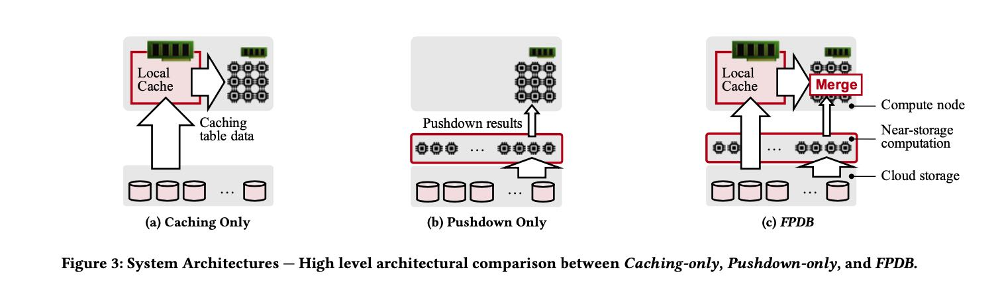
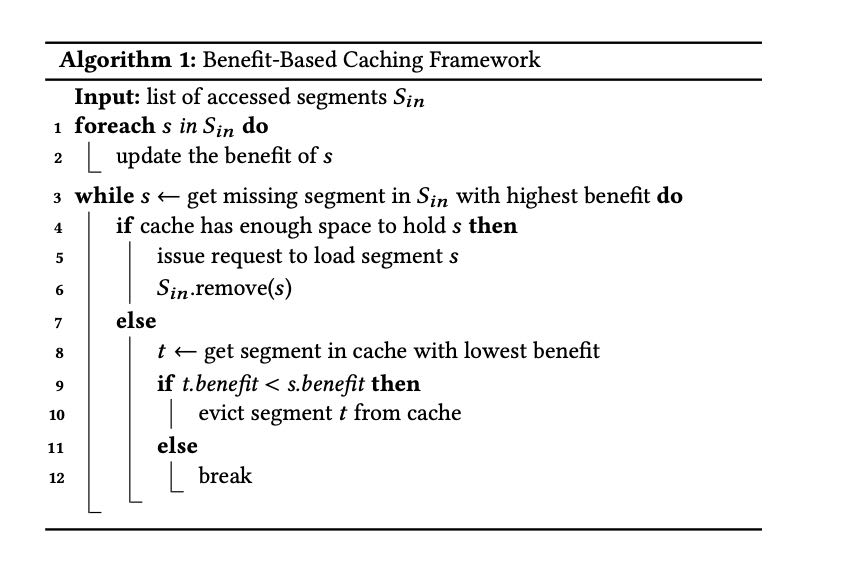
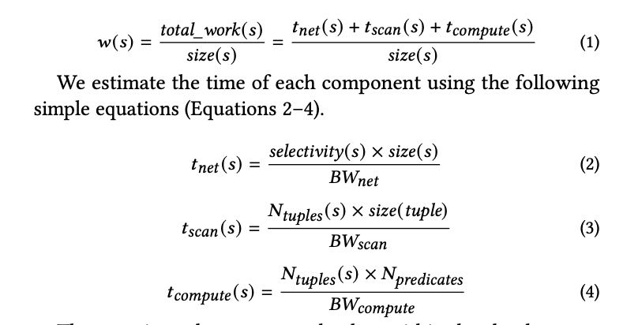

FlexPushdownDB: Hybrid Pushdown and Caching in a Cloud DBMS
Table of Contents
1. FPDB设计思路
这篇文章的背景是：现在许多remote storage都支持pushdown功能，过去许多系统是将caching和pushdown分开考虑的，但是实际运行中pushdown和caching关系还是很大的。比如从latency上考虑做point query, 可能pushdown可能就比caching要好，这个会影响到cache淘汰策略。如何平衡两者是这篇文章的主要焦点。
Two solutions have been explored to mitigate this network bot- tleneck: caching and computation pushdown. Both solutions can reduce the amount of data transferred between the two layers. Caching keeps the hot data in the computation layer. Examples in- clude Snowflake [21, 48] and Presto with Alluxio cache service [14]. The Redshift [30] layer in Redshift Spectrum [8] can also be consid- ered as a cache with user-controlled contents. With computation pushdown, filtering and aggregation are performed close to the storage with only the results returned. Examples include Oracle Exadata [49], IBM Netezza [23], AWS Redshift Spectrum [8], AWS Aqua [12], and PushdownDB [53]. The fundamental reasons that caching and pushdown have performance benefits are that local memory and storage have higher bandwidth than the network and that the internal bandwidth within the storage layer is also higher than that of the network.
Existing DBMSs consider caching and computation pushdown as orthogonal. Most systems implement only one of them. Some systems, such as Exadata [49], Netezza [23], Redshift Spectrum [8], and Presto [14] consider the two techniques as independent: query operators can either access cached data (i.e., full tables) or push down computation on remote data, but not both.
理想的查询应该是， 一部分从caching里面拿数据，一部分交给pushdown，然后数据源在上面做merge两路数据。FPDB(FlexPushdownDB)引入separable operators的概念，这对这类operator是可以拆分成为两路查询，并且将结果合并上来的。并且一旦出现cache miss, 我们并不会急于立刻取cache, 是需要评估相比pushdown的cost如何：如果pushdown cost很低的话，并且访问频次很低的话，那么对未来查询可以继续使用pushdown. 为此引入的cache淘汰策略叫做weighted-lfu, 所谓weight就是这个cache的benefit，综合考虑cache size，access frequency，以及作用在这个cache上的predicate(由此计算出来的selectivity).
FPDB introduces the concept of separable operators, which com- bine local computation on cached segments and pushdown on the segments in the cloud storage. This hybrid execution can leverage cached data at a fine granularity. While not all relational operators are separable, some of the most commonly-used ones are, including filtering, projection, aggregation. We introduce a merge operator to combine the outputs from caching and pushdown.
Separable operators open up new possibilities for caching. Tra- ditional cache replacement policies assume that each miss requires loading the missing data block to the cache, which incurs a con- stant cost if the blocks have the same size. In FPDB, however, this assumption is no longer true because we can push down compu- tation instead of loading data. The cost of a miss now depends on how amenable the block is to pushdown—for misses that can be accelerated with pushdown (e.g., high-selectivity filters), the cost of a miss is lower. We develop a new benefit-based caching framework and a new caching policy called Weighted-LFU, which incorporates caching and pushdown into a unified cost model to predict the best cache eviction decisions. We compare Weighted-LFU with popular conventional policies, including least-recently used (LRU), least- frequently used (LFU), and an optimal policy called Belady [18] that assumes the availability of future access patterns. Our evaluation shows that Weighted-LFU outperforms all these policies.
2. Cache or Pushdown
Cache和Pushdown之间的关系大约是这样：
When the cache size is small, pushdown outperforms caching due to reduced network traffic; when the cache size is sufficiently large, caching performs better due to a higher cache hit ratio. Ideally, a system should adopt a hybrid design that combines the benefits of both worlds—caching a subset of hot data and pushdown compu- tation for the rest, which is shown as the bottom line in Figure 2.
Snowflake, Presto, Redshift Spectrum缓存策略
Snowflake [21] and Presto [14] support caching with the LRU replacement policy. Redshift Spectrum [8] does not support dynamic caching but allows users to specify what tables to keep in the Redshift layer for fast IO.
几个支持pushdown的cloud storage
Many in-cloud databases push certain computation tasks near the data source, such as AWS Redshift Spectrum [8], S3 Select [31], and PushdownDB [53]; these systems use software techniques to implement pushdown functionalities. Recently, AWS Advanced Query Accelerator (AQUA) [12] announced to use special hardware accelerators (i.e., AWS Nitro chips [6]) to implement pushdown functions with faster speed and lower energy consumption.
支持computation的DRAM/NVM
Moreover, some recent work explored processing-in-memory (PIM) to push computation into DRAM or NVM. Modern 3D-stacked DRAM implemented a logic layer underneath DRAM cell arrays within the same chip [20], avoiding unnecessary data movement between memory and the CPU [27]. Kepe et al. [34] presented an experimental study focusing on selection in PIM.
3. FPDB架构和设计要点：
架构图示

- Caching Table Data or Query Results. 是缓存Table Data还是缓存结果，FPDB选择了缓存Table Data. 如果选择Query Results并且是中间节点结果的话，其实就相当于是MV.
- Storage and Caching Granularity. 将table拆分成为许多个partition, 每个partition下面的column data作为cache unit. 可以使用(table name, partition name, colum name) tuple作为cache key, 使用Apache Arrow作为cache file.
我理解使用Apache Arrow（或者说column）作为cache file有几点好处：
- 如果转换成为Parquet这样的格式，没有太多必要因为只有1列，而且本身cache file就不会太大，所以加上index这样的东西效果还不一定好。
- Write/Read涉及到IO操作以及转换操作，这个部分代价也比较大。如果Read file可以直接使用类似mmap这样的话，那么就更快了。
Caching Table Data or Query Results: Two types of data can potentially be cached in FPDB: table data and query results. Table data can be either the raw input files or a subset of rows/columns of the input tables. Query results can be either the final or intermediate results of a query, which can be considered as materialized views.
Storage and Caching Granularity. FPDB stores tables in a dis- tributed cloud storage service. Tables are horizontally partitioned based on certain attributes (e.g., primary key, sorted field, times- tamp, etc.). Each partition is stored as a file in the cloud storage and contains all the columns for the corresponding subset of rows.
The basic caching unit in FPDB is a segment, which contains data for a particular column in a table partition (i.e., a column for a subset of rows). A segment is uniquely identified by the segment key, which contains three parts: the table name, the partition name, and the column name. The data format of a segment (e.g., Apache Arrow) can be potentially different from the data format of the raw table file (e.g., CSV or Parquet).
4. FPDB Separable Operators
所谓的Separable Operators就是这个operator可以分解为cache和pushdown两路：
- Projection. 这个可以分解
- Filtering Scan. 如果不考虑延迟物化的情况比较简单，可以分解。如果考虑延迟物化，对于对于predicate column可以pushdown, 对于物化列则需要使用cache.
- Base Table Aggreation. 比如avg可以分解为sum和count的合并，但是情况比较trick.
- Hash Join. Build side没有办法，Probe side需要下推bloom filter, 这个需要pushdown storage支持bloom filter. 可能比较难。
- Sort. 要求cache和pushdown storage都支持sort. 但是大部分pushdown storage都不支持sort(However, since the cloud storage today does not support sorting (e.g., S3 Select), the separation of sorting is not supported in FPDB.)
FPDB在生成计划的时候有下面这样的假设：从cost上来看, local cache < pushdown < pullup(拿到所有数据，或者说在上面做random access). 不过感觉这里有个问题就是，以SR为例FE需要知道每个节点的缓存情况，才能生成具体的计划，但是让FE去追踪BE cache情况比较复杂(心跳会比较多，而且还涉及到pin/unpin cache file). 最好的方式还是让BE自己决定走cache还是pushdown.
FPDB currently uses heuristics to generate separable query plans. It takes an initial plan from the query optimizer, and splits the execution of separable operators based on the current cache content. Specifically, an operator on a partition is always processed based on cached segments whenever the accessed data is cached. Otherwise, we try to pushdown the processing of the partition as much as we can. If neither works (e.g., the operator is not separable), we fall back to the pullup solution and load the missing segments from the storage layer. Note that the heuristics we adopt can generate only one separable plan given an input query plan. We adopt these heuristics based on the following two assumptions:
- Local processing on cached data is more efficient than push- down processing in the storage layer.
- Pushdown processing is more efficient than fetching all the accessed segments and then processing locally.
Although our heuristics are simple and effective, we do note that they may not always lead to a globally optimal separable query plan, because the two assumptions may not hold universally. For example, pushdown may outperform due to its massive parallelism even if all the data is cached. An important follow-up work is to develop a pushdown-aware query optimizer that can deliver better performance than the simple heuristics. We leave such exploration to future work.
5. FPDB Caching Framework
执行的时候如果Cache不存在，那么优先使用pushdown, 之后后台异步进行cache population.
For cache hits, the hybrid executor processes the query using the cached segments. Cache misses include two cases: First, if the caching policy decides not to load the segment into the cache, then FPDB exploits computation pushdown to process the segment. Oth- erwise, if the caching policy decides to cache the segment, the DBMS can either wait for the cache load or push down the com- putation. The tradeoff here is between query latency and network traffic. FPDB adopts the former to minimize network traffic.
Cache Eviction策略叫做Benefit-Based Caching Framework, 这个东西的好处就是调整benefit算法就可以适配到 LRU, LFU, Belady Policy以及文章的Weighted-LFU. 算法如下:
- LRU 把benefit 设置成为 last access timestamp就行
- LFU 把benefit 设置成为 (frequency * 1/(segment size)). 这里把segment size考虑进去
- Belady 把benefit 设置成为 1/(下次使用这个cache的时间). 这个是理想的情况

Weighted-LFU算法则考虑了：如果这个cache被evicted出去之后，使用pushdown的代价如何，包括网络传输，扫描代价，计算predicates代价。每次访问都需要更新这个benefit.
但是我觉得好像有个点没有考虑进去，就是考虑data freshness/recency. 如果某个file对应的数据特别老，再次被访问的几率很小的话，那么需要花很长时间才能evicted出去。

6. 实现和实验细节
Gandiva这个东西多线程做codegen有点问题， 而且似乎很难调试。
FPDB uses Gandiva [10] for efficient ex- pression evaluation. Gandiva compiles and evaluates expressions on data in Arrow format. It uses LLVM to perform vectorized process- ing and just-in-time compilation to accelerate expression evaluation and exploit CPU SIMD instructions for parallelism.
While Gandiva supports multi-threaded expression execution we found multi-threaded expression compilation troublesome. An attempt to compile multiple expressions simultaneously often failed in LLVM code generation or produced incomplete expressions. Therefore, we use serial compilation only.